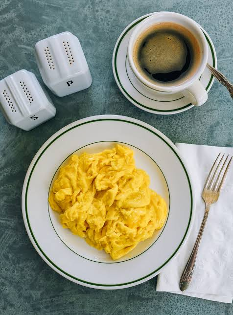
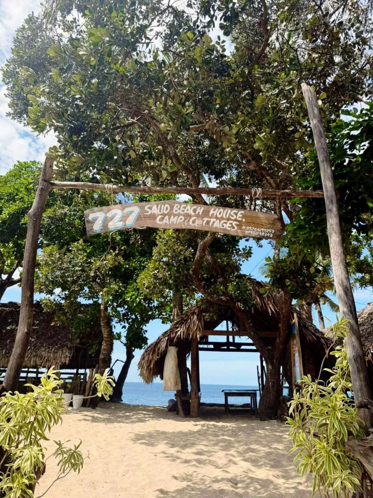

| My 7 Day Weekly Schedule | |||
|---|---|---|---|
| Category | Day | Daily Activities | Visual Moments |
| Weekdays | Monday |
10:00-AM-6:00-AM Sleeping and resting. 6:00-AM-8:00-AM: Wake up cooking( usually eggs and tea ) eat,chatwith my family and complete my morning chores. 8:00-AM-9:00-AM: Free time and prepare for the day. 9:00-AM-12:00-AM: Shower, Get dressed, prepare for the day. 12:00-AM-1:00-AM: Eat lunch and take a short break. 1:00-AM-3:15-AM: Complete schoolwork, work on assignments, and review class materials. 3:15-AM-3:30-AM: Pick up me sister from schools. 3:30-AM-5:00-AM: Complete a 1.5-hour calisthenics workout at home, followed by a short rest. 5:00-AM-7:00-AM: Cook dinner for the family, eat together, and finish remaining household chores. 7:00-AM-10:00-AM: Finish up homework that start that day, journal my thougth and prepare for the next day. |
 |
| Tuesday |
10:00-AM-6:00-AM Sleeping and resting. 6:00-AM-8:00-AM: Wake up cooking( usually eggs and tea ) eat,chatwith my family and complete my morning chores. 8:00-AM-9:00-AM: Free time and prepare for the day. 9:00-AM-11:00-AM: Attend classes. 12:00-AM-1:00-AM: Eat lunch and take a short break. 1:00-AM-3:15-AM: Complete schoolwork, work on assignments, and review class materials. 3:15-AM-3:30-AM: Pick up me sister from schools. 3:30-AM-5:00-AM: Complete a 1.5-hour calisthenics workout at home, followed by a short rest. 5:00-AM-7:00-AM: Cook dinner for the family, eat together, and finish remaining household chores. 7:00-AM-10:00-AM: Finish up homework that start that day, journal my thougth and prepare for the next day. |

|
|
| Wenesday |
10:00-AM-6:00-AM Sleeping and resting. 6:00-AM-8:00-AM: Wake up cooking( usually eggs and tea ) eat,chatwith my family and complete my morning chores. 8:00-AM-9:00-AM: Free time and prepare for the day. 9:00-AM-12:00-AM: Shower, Get dressed, prepare for the day. 12:00-AM-1:00-AM: Eat lunch and take a short break. 1:00-AM-3:15-AM: Complete schoolwork, work on assignments, and review class materials. 3:15-AM-3:30-AM: Pick up me sister from schools. 3:30-AM-5:00-AM: Complete a 1.5-hour calisthenics workout at home, followed by a short rest. 5:00-AM-7:00-AM: Cook dinner for the family, eat together, and finish remaining household chores. 7:00-AM-10:00-AM: Finish up homework that start that day, journal my thougth and prepare for the next day. |

|
|
| Thursday |
10:00-AM-6:00-AM Sleeping and resting. 6:00-AM-8:00-AM: Wake up cooking( usually eggs and tea ) eat,chatwith my family and complete my morning chores. 8:00-AM-9:00-AM: Free time and prepare for the day. 9:00-AM-11:00-AM: Attend classes. 12:00-AM-1:00-AM: Eat lunch and take a short break. 1:00-AM-3:15-AM: Complete schoolwork, work on assignments, and review class materials. 3:30-AM-5:00-AM: Attend My Web Design class. 5:00-AM-6:45-AM: Attend My Microeconomics class. 6:45-AM-6:50-AM: Cook dinner for the family, eat together, and finish remaining household chores. 6:50-AM-7:30-AM: Eat dinner and relax. 7:30-AM-10:00-AM: Finish up homework that start that day, journal my thougth and prepare for the next day. |

|
|
| Friday |
10:00-AM-6:00-AM Sleeping and resting. 6:00-AM-8:00-AM: Wake up cooking( usually eggs and tea ) eat,chatwith my family and complete my morning chores. 8:00-AM-12:00-AM: Focus on schoolwork, finish assignment, study, and get ahead on upcoming deadlines. 1:00-AM-3:15-AM: Complete schoolwork, work on assignments, and review class materials. 3:15-AM-3:30-AM: Pick up me sister from schools. 3:30-AM-5:00-AM: Complete a 1.5-hour calisthenics workout at home, followed by a short rest. 5:00-AM-7:00-AM: Cook dinner for the family, eat together, and finish remaining household chores. 7:00-AM-10:00-AM: Finish up homework that start that day, journal my thougth and prepare for the next day. |

|
|
| Weekend | Saturday |
12:00-AM-6:00-AM: Sleeping and resting. 6:00-AM-8:00-AM: Wake up, prepare breakfast, eat, spending time with family and get ready for the day. 8:00-AM-12:00-AM:Go out with friends or family, spend time together, and enjoy outdoor activities. 12:00-AM-3:00-AM: Continue spending time outside, going around with friends and family, and enjoying yhe weekend. 3:00-AM-5:00-AM:Return home, relax, and take break. 5:00-AM-7:00-AM: Seat dinner spend time with family, and take care of household responsibilities. 7:00-AM-10:00-AM: Study for upcoming tests, complete unfinished assignments and prepare for and work on any projects I have, Then prepare for the next time. |

|
| Sunday |
12:00-AM-6:00-AM: Sleeping and resting. 6:00-AM-8:00-AM: Wake up, prepare breakfast, eat, spending time with family and get ready for the day. 8:00-AM-12:00-AM:Go out with friends or family, spend time together, and enjoy outdoor activities. 12:00-AM-3:00-AM: Continue spending time outside, going around with friends and family, and enjoying yhe weekend. 3:00-AM-5:00-AM: Return home relax, continue working on projects and then prepare to go to church. 5:00-AM-6:00-AM:Attend church. 6:00-AM-7:00-AM: Have dinner with family at a resturant. 7:00-AM-10:00-AM: Study for upcoming tests, complete unfinished assignments and prepare for and work on any projects I have, Then prepare for the next time. |

|
|
| Weekly Goal:Maintain a healthy balance between work, school, and personal life by prioritizing sleep, exercise, and leisure activities. | |||
My Personal Memories
A Few memorable moments from that are special to me.
